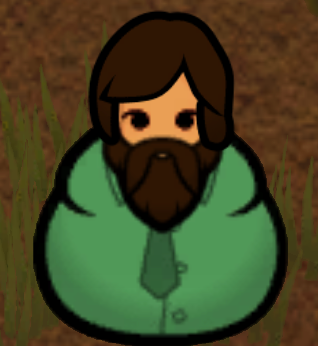
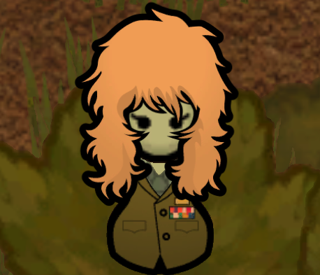

| Xenotype | Image | Description | Source |
|---|---|---|---|
| Baseliner | Humans with no extra genes of note | Biotech DLC | |
| Dirtmole |  |
Dirtmoles love to be in dark places, the more cramped the better, and therefore thrive in close combat. Whilst they are extremely capable when it comes to mining or digging, they suffer from poor long-distance eyesight, have slow movement speed, and will have an adverse reaction to light. | Biotech DLC |
| Genie | Genies are solely designed to be engineers. With their brains specifically hardwired to analyze and construct machinery, they are socially inept and emotionally void. This lack of emotion does however allow them to stay calm and follow orders when most others would/could not. They also suffer from weak bones and therefore can become debilitated with very little effort, from very little pain. | Biotech DLC | |
| Hussar | Hussars are soldiers, through and through. They fight with aggression and precision that most others cannot achieve, have enhanced healing capabilities, can survive in extreme temperatures, and continually ingest military drugs. They consume these drugs so much they have a dependency on them, making them completely subservient to their commanders. | Biotech DLC | |
| Neanderthal | The Neanderthals are strong and well-built; so much so that they are very difficult to injure. Furthermore, their immune systems are strong enough that they are resistant to infection. Much like real-world Neanderthals, however, these humans have yet to fully develop into a functioning society and therefore are weaker at intellectual and social tasks. They are also impulsive and quick to anger. | Biotech DLC | |
| Pigskin |  |
Capable of speech, two-legged movement, and the use of tools, the Pigskins are human-pig hybrids. Their trotter hands leave them disadvantaged when it comes to the precise use of tools, objects, or equipment, but their stomachs allow them to eat almost anything with no consequences. Struggling at a distance, the Pigskins tend to prefer close-range weaponry. | Biotech DLC |
| Impid | Impids were made for desert life, with the ability to survive high temperatures, move incredibly fast, and spew fire from their mouths. As they are specifically designed for the desert, they will struggle to survive in most other environments, and furthermore have terrible abilities when it comes to farming. Capable fighters at range, the Impids will very easily lose a fight should it become a more close-quarters encounter. | Biotech DLC | |
| Waster | Wasters are immune to toxic pollution and can ingest as much psychite and drugs as they want to with no ramifications. Their metabolism in fact demands that they must consume some form of psychite to survive. This lifestyle leads to a grey-skinned appearance, and an aggressive demeanor. | Biotech DLC | |
| Yttakin | Almost the exact opposite of the Impids, the Yttakin are engineered to survive in ultra-cold environments. Their size and coating in fur allow them to be incredibly sturdy, at the cost of their speed, energy, and precision. The Yttakin are in tune with nature, and as such can summon animals to their side during a battle. | Biotech DLC | |
| Highmate | Highmates are designed to be the perfect companion in life. With huge amounts of empathy and beauty, these beings psychically bond with their mate. But this is their sole purpose, meaning they cannot perform manual tasks, are incredibly weak, and are literally incapable of violence, regardless of the situation. (vanilla expanded highmates added the cat features) | Biotech DLC | |
| Sanguophage |  |
"Sanguophages are capable of passing amongst other xenotypes undetected, and for good reason. These beings are in possession of superhuman powers and have a genetic need for sustenance via human blood.These beings are mentally adept in every field, and endlessly beautiful. In combat, they are capable of throwing deadly spines, but can also heal injured allies. They cannot age or die naturally, and will never be afflicted by a poison or disease. A Sanguophage can create a new Sanguophage by re-implanting its own xenogerm into a person. " | Biotech DLC |
| Fleetkind | These creatures produce children every 25 in game days. Be careful not to send them into combat as they are delicate and explode on death. Due to their ability to hover, they can avoid most obstacles in the terrain and travel quickly. They are much better at bonding with animals than people. | Alpha Genes | |
| Helixian | Revolting slug like humans that feed on corpses and decay. These creatures are strengthened by lung rot, slow in the cold, and quite ugly. In fact, everyone in the colony will get a mood debuff when they are around. Due to their eye appendages, they seem to be able to see and shoot a little better. They are terrible cooks. | Alpha Genes | |
| Animusen |  |
A cold thriving Xenotype with a much better (and less aggressive) disposition than Yttakin. Has powerful psychic abilities. This creature does not do well in the heat or the sun. They are terrible at mining and planting. They are terrible at melee combat. | Alpha Genes |
| Lapis | A Xenotype of rocky looking humans adapted to living basically without organic food. They must continually search for minerals to feed themselves and sustain their strange metabolism. Has abilities that spend the metal they eat. | Alpha Genes | |
| Wretch | Malformed and miserable creatures produced by genetic testing gone awry. Subject to daily unstable mutations that can rewrite their genome completely. 10 new genes every day either good or bad. | Alpha Genes | |
| Taukai | A Xenotype of constantly morphing, cancer afflicted people. They constantly get carcinomas and can re-purpose them to get powerful buffs. They grow tumors and use them to heal their friends. They are filthy creatures with poor social, medical and artistic skill. They don't feel pain and their lungs are immune to toxic waste. This can be dangerous for them as they have frail skin and get damaged easier. Their bodies seem to have adapted to heal a little faster. | Alpha Genes | |
| Hiveling | The result of an escaped experiment of the Sophiam Empires. The insectoid hivelings are barely human. Hivelings thrive in heavily polluted environments and get a pollution stimulus. You can parasitize people and that's neat! | Alpha Genes | |
| Mind Devourer | A Xenotype of powerful brain devouring psychics that are reviled by any other humans around the Rim. Weak in combat but great at psycasting. Mind attacks that can drive others to go berserk. | Alpha Genes | |
| Efreet |  |
A modified strain of the Impid Xenotype designed as shock troopers. Obsessed with fires and almost immune to heat. Good at melee. They are depressive and prone to agressive mood breaks. They are terrible at working with plants and animals but great at melee. They can spew fire and detonate the area around them. Immune to heat. | Alpha Genes |
| Arachnidean | Well mannered artists and builders. They are a little shy around others - probably because they are spiders.They are weak to cold and terrified of fire. They have strong stomachs which allows them to eat even raw foods. When faced with danger, they can throw spinnerets at a foe. They are immune to toxic environments. | Alpha Genes | |
| Lunarian | A peaceful moth race that are good at social, animals and plants. They are delicate creatures who experience extra pain from injuries. Due to their high fertility and libido, they would much rather further their progeny than be exposed to dangers like cold, sunlight and fire. | Alpha Genes | |
| Mantid | Mantids are vicious, powerful and adept at melee combat. They have a bloodthirsty nature and get angry when they haven't killed in a while. They love to start social fights with peers. They never suffer from food poisoning and even get a benefit to stats when exposed to polluted environments. The skin of the mantis is highly flammable but has extra armor against blunt and piercing attacks. Due to their sharp claws and insect body, they find it hard to mate with non insectoid pawns. | Alpha Genes | |
| Ocularkin | Individualistic and bizarre, Ocularkins are warped and cunning and possess an ability to connect with ocular trees. They are excellent at taking care of plants and reproduce via planting a sapling child. | Vanilla Races Expanded Phytokin | |
| Guaranlenkin | Guaranlenkin are a type of plant person. They can go without food as long as they are exposed to sunlight. They grow their children in the ground as saplings. They can summon 2 companion dryads to protect them and have excellent skills in tending to Guaranlen trees. They are not great fighters with slow wound healing and weak melee damage.They are awful at shooting and construction. They need much more sleep than others, probably to maintain their high levels of attractiveness. They are terrified of fire. They have high levels of psy sensitivity that get higher with age. | Vanilla Races Expanded Phytokin | |
| Polluxkin | These are plant based humanoids that can survive off sunlight alone. They are scared of fire and not great fighters due to their terrible skill in shooting/melee. Their wounds are slow to heal and they need extra sleep. Polluxkin can germinate a new Pollux sapling and improve any local Pollux trees' ability to consume waste. They are immune to toxicity and need to regularly consume toxic wastepacks to survive. The Polluxkin are considered very beautiful. | Vanilla Races Expanded Phytokin | |
| Animakin | These are beautiful plant based humanoids that can survive off sunlight alone. The Animakin are particularly suited to the care and use of Anima trees. Some say an Animakin in your colony will grow enough Anima grass to make whatever you need. They are quite psy sensitive to aid in their conversations with Anima trees. They need a lot of extra sleep after such hard work. They are not great at fighting, with weak melee/shooting skill as well as slow wound healing. They are also terrified of fire. | Vanilla Races Expanded Phytokin | |
| Blessed |  |
Elves that are ageless, they stop aging at 18. They get 50% bonus to learning speed and are non-senescent. They are very attractive, have pointed ears, and have the ability to remain calm in the most stressful of situations. | Elves of the Rim |
| Cursed |  |
An Ork like race meant to resemble those found in Warcraft, Warhammer and other fantasy media. They're mean, green and love to scream. They have reduced pain are "unstoppable", have total antitoxic lungs and a robust digestion. They become rather irate when they haven't killed in a while. They are incredibly ugly. Orcs have a mild cell instability. | Orcs of the Rim |
| Stonefolk |  | A dwarf like race meant to resemble those found in Dwarf Fortress and other fantasy media. They're tough, short-tempered and dependant on alcohol. The stonefolk are tolerant to cold and great at mining, perfect for building in caves. The are robust creatures with strong stomachs. The most prominent feature you will see is all members of this xenotype have luscious beautiful beards. | Dwarves of the Rim |
| Orc | "Orcs are a robust and imposing race, characterized by their strong physique, prominent tusks, and formidable presence. With a deep sense of honor and loyalty, they value unity within their tribes and possess a collective wisdom passed down through generations. Skilled warriors from a young age, orcs excel in combat due to their physical resilience and endurance. While often perceived as brutish, they hold a deep respect for their ancestral lands and seek harmony with nature when undisturbed. The origins of the orc race are shrouded in ancient legends and mysteries, with varying tales suggesting ties to ancient civilizations or even divine intervention." | Orc Xenotype | |
| Widow Arachna | Quite delicate, but deadly at long range combat and can be excellent psy-users. As a side effect, they gained an affinity for crafting, but this cost them a large debuff at animal, plant, and mining skills. | Obsidia Expansion - Arachnas Xenotype | |
| Wolf Arachna | the most deadly and dangerous, due to their increased aggressiveness, they are equally skilled in both melee and ranged combat, they also have the potential for psy-users. As a side effect, they gained an affinity for Arts, but this cost them a large debuff in Animal, Plant, and Medicine skills. | Obsidia Expansion - Arachnas Xenotype | |
| Goliath Arachna | the sturdiest and most furred, but slow and prefers melee combat, they also don't well psy-users. As a side effect, they gained an affinity for Building, but this cost them a large debuff in Animal, Plant, and Cooking skills. | Obsidia Expansion - Arachnas Xenotype | |
| Nephilim |  |
With unearthly beauty, feathery wings and heads engulfed in a radiant halo, the Nephilim style themselves as emissaries and descendants of the divine. Martially gifted, physically striking and socially apt, they are natural leaders and often found across rimworlds sheparding small communes of adoring devotees eager for earthly deliverance at the hands of their protector. All that is required to earn it is just one more harvest of the hollilly. And maybe another. And another... | Nephilim Xenotype |
| JDsmeleexenotype | This xeno is bred only for fighting. They are terrible at everything except melee. They do not age, scar or get sick. If they get hurt their wounds seem to heal incredibly fast. They are tox/fire resistant, psy-sensitive and very fast. To assist with these terrible skills, the xeno continually seeks hemogen from others. $use jd'smeleexenogerm | JDsmeleexenotype | |
| JDsstrongmelee | This is an even stronger version of JD's original xenotype. These xenos hit a little harder, heal faster, move faster and are more psy sensitive than their counterparts. Unfortunately these mutations have caused them to be hyper aggressive. Due to their many violent mental breaks they have learned to bandage people up very efficiently. Better keep them in a good mood...... $use jd'sstrongmeleexenogerm | source | |
| Euglena | Pawns of this race can perform photosynthesis, converting sunlight into nutrients. Euglena are endowed with the ability to regenerate, allowing them to regenerate lost body parts over time. To maintain their health and can do the work of absorbing light on their own to replenish their energy. | Euglena Expanded - Euglena Xenotype | |
| Fenrisulfr | "The Fenrisúlfr are a relatively simple product of mixing canine genes with humans, designed to be fiercely strong in groups, making them perfect for close combat. However, due to the immense amount of energy these genes provided, they can never sit still quite long enough to heal, taking them much longer than the average person, even with their strong immunity. Their constant need to be approved by others can be seen as a negative initially, however once opinion improves, they can be amongst the happiest of colonists." | Erin's Fenrisúlfr | |
| Faun | "Fauns possess a psychic link with the earth which passively boosts the growth of plants around them. Nature returns the favour, granting Fauns the ability to constrict foes in a barrage of thorny chokevines when cornered, giving them ample time to escape. Their intelligence and hot-footedness comes at the cost of their physical fragility and inherent reclusiveness – a personality trait that sets them apart from their frisky cousins, the Satyrs." | Roo's Faun Xenotype | |
| Satyr | "Satyrs stand at a similar height to baseliners, but insist that their bold goat horns make them taller, darker, and much more handsome. Their ears are pointed, giving them a mischievous appeal, and their hair is typically brunette and thick, making growing a stylish and bushy beard a doddle for male Satyrs." $use satyrxenogerm | Roo's Satyr Xenotype | |
| Scorchlander | "Much like their Kenshi counterparts, scorchlanders can eat raw food and excel in crafting. They however struggle with cooking, farming, and especially mining, and can carry less things than their baseliner counterparts. Unlike Kenshi they can tolerate higher temperatures, but I felt it was appropriate given they're mostly desert nomads." | Scorchlander Xenotype | |
| Rotfish | "Rotfish is a subspecies of human living deep in the rainforest, they have been genetically adapted to this humid and sultry environment. Their digestive systems can eat meat that is completely rotten, and with the help of their almost completely degenerated noses they do not find the smell of rottenness unpleasant, but rather prefer the "heavy" smell. The fish genome allows them to move more swiftly in wet environments, and they can also store deadly rotten gases in their air sac organs and release them in battle. Their bodies and the deadly virus create a balance that allows them to inject toxins into their enemies with every attack, but once the rotfish dies, this balance is immediately broken and their bodies decay rapidly.." | Biotech xenotype expanded - Rotfish | |
| Drakonori | A xenotype of beautiful draconic people. Usually underestimated by their enemies, as their physical appearance makes them seem less threatening than they really are. Very pretty, venmous and egglaying. $use drakonorixenogerm | Alpha Genes | |
| Fenrisulfr | A fairly simple synthesization of prominent canine genes. They are very sociable and like to live communally. They are strong melee fighters but heal slowly. They are terrible artists. $use fenrisúlfrxenogerm | Erin's Fenrisúlfr | |
| Moonjelly | Moonjellies are super speedy! They zip around the map much faster than a human. Greatly increased medical speed and tend quality. Toxic immunity, and increased immune speed. Anaesthesia-Inducing basic melee attacks. Small carrying capacity, extremely fragile in combat, more sensitive to temperatures. $use moonjellyxenogerm | Moonjelly Xenotype | |
| Saurid | They are part reptile, part human. They thrive in arid environments and are cold blooded. They have low metabolisms. They have sharp claws and scales which makes them excel in melee combat. Saurids lay eggs to have their children. Since they release pheromones, any pawns of the same xenotype will be more attracted to them. They are immune to food poisoning and get affected by toxic gas slower. | Vanilla Races Expanded - Saurid | |
| Poleepkwa | "Poleepkwa, also known as Prawns (their derogatory nickname), are the alien race from the 2009 film District 9. They are a tall, humanoid insectoid race known for their love of meat and cat food." These pawns prefer to be naked as it helps them run faster. They lay eggs to further their kind. They have strong crafting and intellectual. They are afraid of fire and super psysensitive. They are considered unnattractive. They hate the cold but thrive in the heat. $use poleepkwaxenogerm | Poleepkwa Xenotype | |
| Frost Jotun | Frost giant from the mountains of Nifelheim. They are used to the cold and cannot stand the heat. They can grow quite large becoming formidable tanks. They have developed the ability to recover from illness and injury quickly. They tend to live quite long and never lose the ability to reproduce. They are terrible at cooking, planting, art and intellectual. | Big and Small Genes | |
| Succubus/Incubus | They are said to be beautiful, red, shapeshifting demons the seduce their victims and prey upon them. They are ageless with perfect immunity. The succubus can psychically bond to their victim giving them the bloodlust trait. This causes the victim to always have violent mental breaks. The succubus is extra psy sensitive and has genetic depression. They require lots of hemogen each day to survive feeding on their lovers to supplement this. They are immune to heat and fire. They have strong melee and social but terrible skills with animals. Due to their tough skin, they make good tanks and can even heal injuries at an accelerated rate. | Vampires, Demons, and the Undead | |
| Hellguard | Giant, red winged creatures. Strong melee/mining/crafting, bad at everything else. They are slow learners so they have evolved to need less sleep so they can catch up on their studies. They are heat and fire immune but can also do ok in the cold. They will only eat meat, especially if it is human as the protein is needed to fuel their large, hulking bodies. They are ageless non-senescents with scarless bodies. They don't get sick and even when injured they heal quick and have less pain. They are slow runners. When in a pinch they can detonate the area around them igniting their chemfuel blood. There are no records of them ever losing fertility with age. | Big and Small Genes | |
| Gatekeeper | They are large red creatures. They cannot feel pain or comfort. A gatekeeper has never been spotted sleeping. They are immune to heat and fire but do fine in the cold too. They have an ogre frame allowing them to mine and construct better. They are very happy and will carry twice the amount as normal albiet very slowly. Since they are simple minded they seem to be blissfully unaware of the bleak world around them. They are psychically deaf. Due to their size, they make excellent tanks. This is helped by their natural armor, superclotting, fast wound healing. | Big and Small Genes | |
| Imp | These happy, little theives are often found in all sorts of places. They are especially known for stealing technological gadgets. They are ageless, non-senescents with perfect immunity. They have heat and fire immunity. They hate the cold. They are carnivores and will vomit if fed a veggie. They are quite small and possess the ability to pounce their enemies. They are quite agile and even possess innate psy sensitivity. Even if you manage to catch one, they are robust and take 75% of the normal damage. They are very fast learners that love to research ways to outsmart the enemy. Since they have high libido and never lose fertility, urbworlds have become overpopulated with these devious creatures. | Big and Small Genes | |
| Feral Dracul | A feral creature barely showing the traces of who it once was. Dracul are ageless, deathless cannibals. They cannot get sick or scar. If they do manage to get hurt, a little bit of time in the dark will have their wounds disappear before your eyes. Their teeth are highly infectious with the vampire virus. Even a small scrape from their fang will turn you into a vampire.
If you ever find yourself in combat with one of these, make sure to fight them in the sun as they can become very weak. Watch out for them in the dark as they are able to run even fast and fight better in the dark. Some say that Dracul even wander through space as they do not suffer from oxygen deprivation or decompression. Since this Dracul has become feral, they are unable to do any kind of work and wander around blissfully content. |
Vampires, Demons, and the Undead | |
| Dracul Spawn | Often considered a more classical vampire. This is a newly newly turned vampire. Though it posses many of the draculs powerful genes, it is still simple minded. This creature is unable to learn anything new no matter what it tries. Dracul are ageless, deathless cannibals. They cannot get sick or scar. If they do manage to get hurt, a little bit of time in the dark will have their wounds disappear before your eyes. Their teeth are highly infectious with the vampire virus. Even a small scrape from their fang will turn you into a vampire. If you ever find yourself in combat with one of these, make sure to fight them in the sun as they can become very weak. Watch out for them in the dark as they are able to run even fast and fight better in the dark. Some say that Dracul even wander through space as they do not suffer from oxygen deprivation or decompression | source | |
| Dracul Neonate | These type of Dracul are a bit slow learners. While in this state of the Dracul transformation, the creature will need to sleep much more. They seem to have developed the ability to jump vast distances and speak to animals. Dracul are ageless, deathless cannibals. They cannot get sick or scar. If they do manage to get hurt, a little bit of time in the dark will have their wounds disappear before your eyes. Their teeth are highly infectious with the vampire virus. Even a small scrape from their fang will turn you into a vampire. If you ever find yourself in combat with one of these, make sure to fight them in the sun as they can become very weak. Watch out for them in the dark as they are able to run even fast and fight better in the dark. Some say that Dracul even wander through space as they do not suffer from oxygen deprivation or decompression | source | |
| Dracul | Dracul are ageless, deathless cannibals. They cannot get sick or scar. If they do manage to get hurt, a little bit of time in the dark will have their wounds disappear before your eyes. Their teeth are highly infectious with the vampire virus. Even a small scrape from their fang will turn you into a vampire. If you ever find yourself in combat with one of these, make sure to fight them in the sun as they can become very weak. Watch out for them in the dark as they are able to run even fast and fight better in the dark. Some say that Dracul even wander through space as they do not suffer from oxygen deprivation or decompression. They near impossible to kill as they can regenerate their limbs. These powers cause the dracul to need more sleep. The creature seems deeply unsatisfied with it's own existence. | source | |
| Dracul Master |  | Dracul are ageless, deathless cannibals. They cannot get sick or scar. If they do manage to get hurt, a little bit of time in the dark will have their wounds disappear before your eyes. Their teeth are highly infectious with the vampire virus. Even a small scrape from their fang will turn you into a vampire. If you ever find yourself in combat with one of these, make sure to fight them in the sun as they can become very weak. Watch out for them in the dark as they are able to run even fast and fight better in the dark. Some say that Dracul even wander through space as they do not suffer from oxygen deprivation or decompression. At this stage, the dracul has developed the power to throw spines at people and heal the wounds of friends. They can speak to animals and leap large distances. The creature seems deeply unsatisfied with it's own existence. | source |
| Half Vampire | desc | source | |
| Frankenstien | desc | source | |
| Lycanthrope | desc | source | |
| Returned | desc | source | |
| Ghoul | desc | source | |
| Nosferatu |  |
desc | source |
| White Rose | desc | source | |
| Lowmate | desc | source | |
| Hunterphage | desc | source |